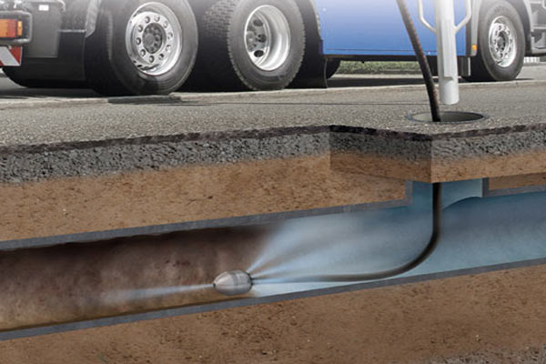
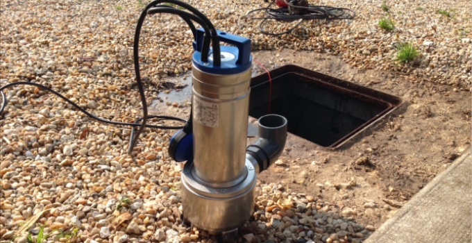
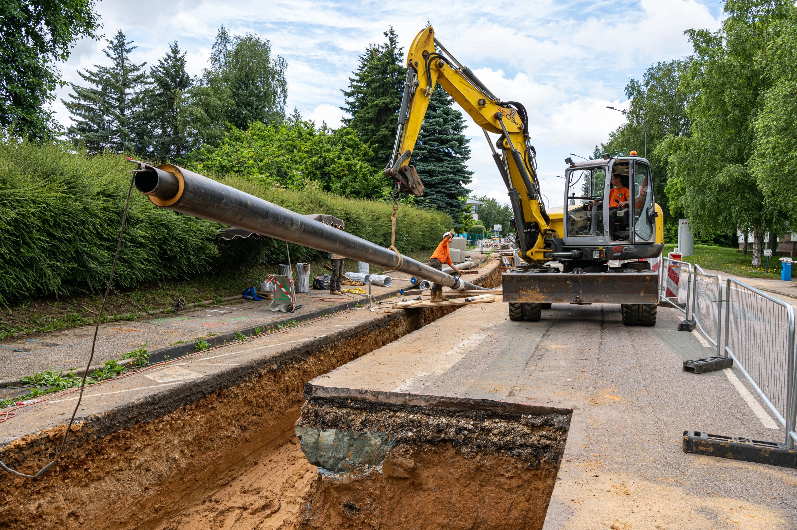
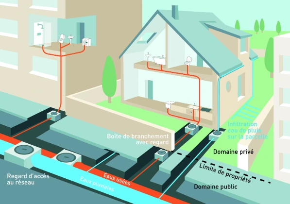
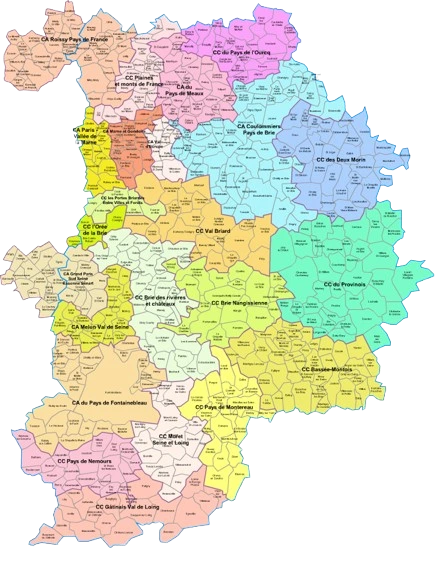
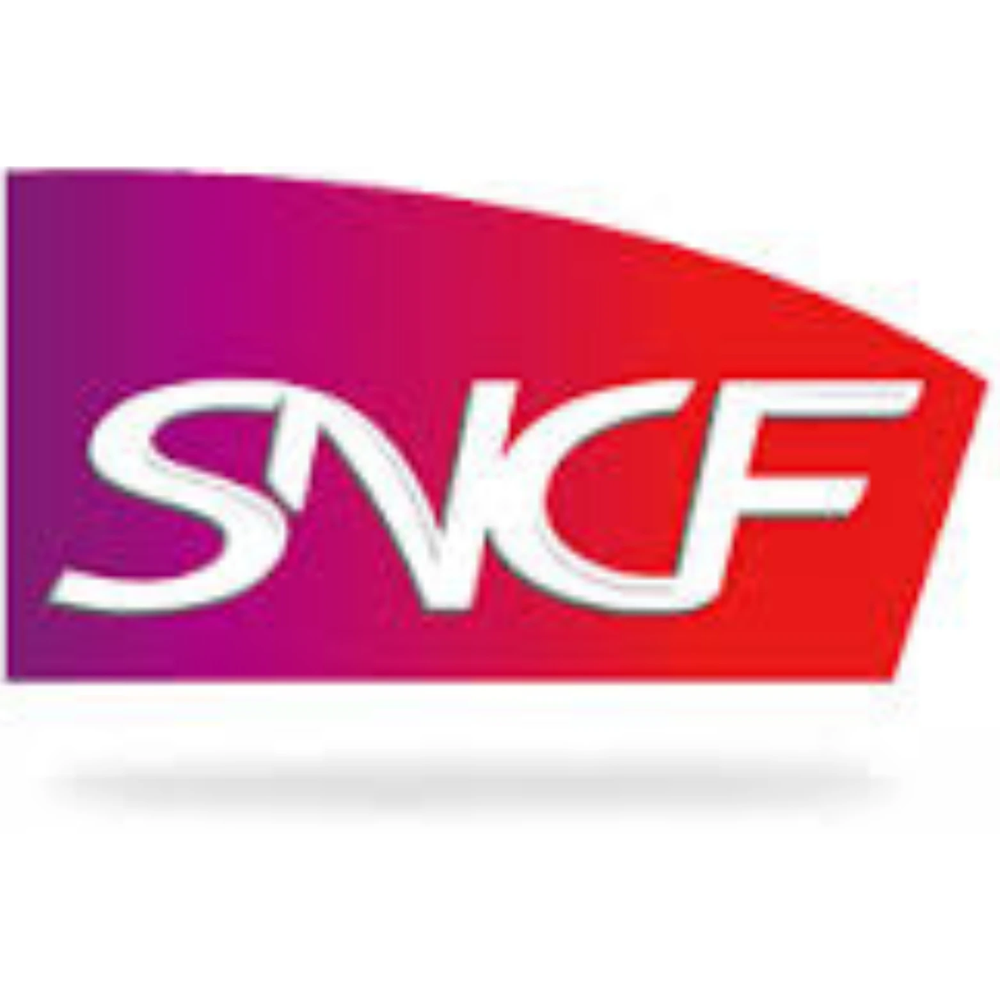
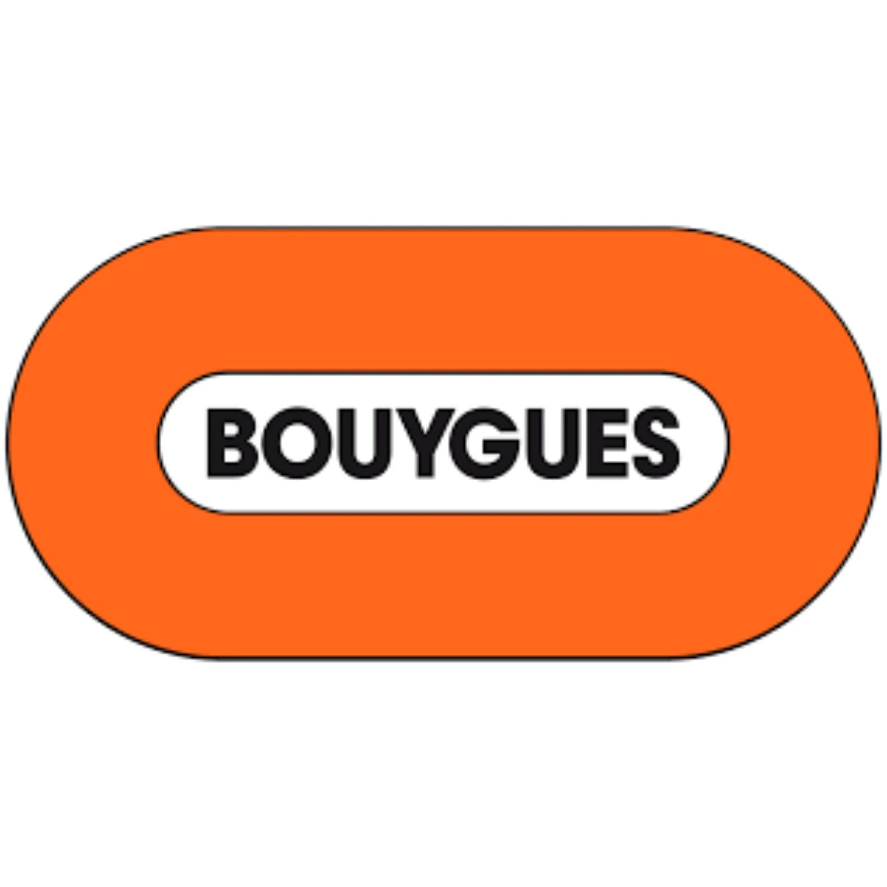
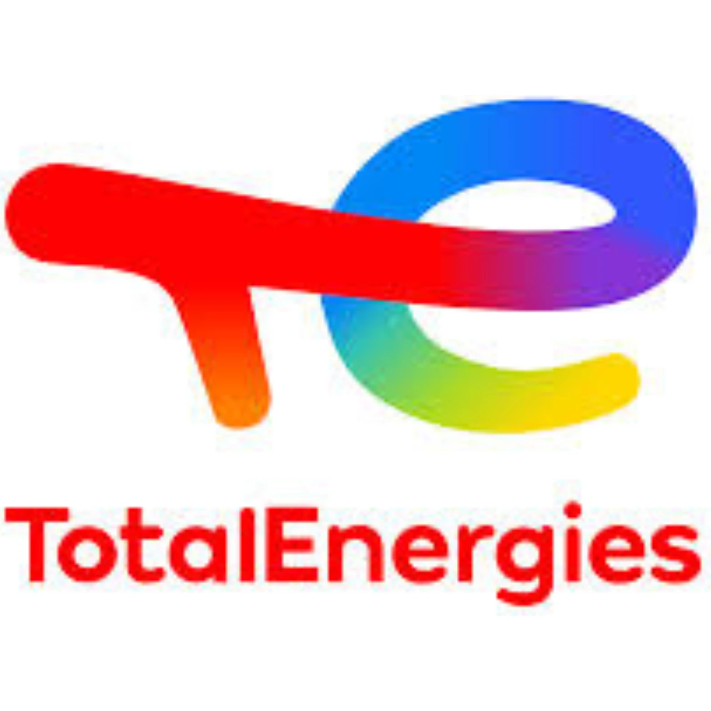

NOS SERVICES

Préservez vos canalisations en optant pour un curage en profondeur. Cette intervention préventive élimine efficacement les bouchons et réduit les risques de pannes. Nos techniciens assurent un entretien durable de votre système d’assainissement individuel.
CONTACTEZ - NOUS
Experts en vidange de fosses septiques et en pompage de bacs à graisse, nous vous proposons des solutions complètes pour assurer l’hygiène et le bon fonctionnement de votre installation d’assainissement.
CONTACTEZ - NOUS
Optimisez l’évacuation de vos eaux usées avec nos pompes de relevage performantes. Pour les particuliers comme pour les professionnels, nous proposons des équipements fiables et adaptés à chaque configuration.
CONTACTEZ - NOUS
Nos équipes prennent en charge tous vos travaux de VRD : pose de réseaux, tranchées, viabilisation. Nous intervenons rapidement avec des prestations conformes aux normes actuelles, adaptées à vos contraintes de terrain.
CONTACTEZ - NOUS
Confiez-nous le raccordement de votre logement au réseau public d’assainissement. Nous réalisons les travaux de terrassement, la pose de tuyaux et la connexion au collecteur communal, dans le respect des normes sanitaires en vigueur.
CONTACTEZ - NOUSNettoyage canalisations : Pour garantir un bon écoulement des eaux et éviter les bouchons, notre équipe réalise un curage complet et régulier de vos canalisations. Nous intervenons dans toute la Seine-et-Marne avec du matériel professionnel adapté à votre installation.
Raccordement à l’égout : Nous prenons en charge l’ensemble du raccordement au réseau public d’assainissement, de la tranchée initiale jusqu’au branchement final. Assainissement 77 vous assure des travaux conformes aux normes et parfaitement réalisés.
Vidange Fosses Septiques : Pour éviter engorgements et odeurs désagréables, faites confiance à nos professionnels pour l’entretien, la vidange et le nettoyage de votre fosse septique dans le 77. Assainissement 77 intervient rapidement, avec efficacité et précision.
Pompe de relevage : Lorsque l’évacuation des eaux usées ne peut se faire naturellement, nous installons une pompe de relevage fiable et performante. Assainissement 77 accompagne particuliers et professionnels dans toute la Seine-et-Marne.
VRD – Voirie et Réseaux Divers : Notre entreprise vous propose des prestations complètes de VRD dans le 77. De la viabilisation de terrain à la pose de réseaux, Assainissement 77 met en œuvre des solutions sur mesure pour vos projets de construction ou de rénovation.
UNE ÉQUIPE QUALIFIÉE ET DES ÉQUIPEMENTS PERFORMANTS
Notre expertise en assainissement repose sur une équipe expérimentée et des outils de dernière génération. Qu’il s’agisse du curage de canalisations, de la vidange de fosses septiques, de l’entretien de pompes de relevage ou de travaux de raccordement et VRD, nous proposons des interventions sur mesure, durables et conformes aux normes en vigueur.
DES TARIFS
JUSTES ET TRANSPARENTS
Nos prestations sont pensées pour allier qualité et accessibilité. Que ce soit pour un dépannage ou un projet plus complet, nous vous assurons un excellent rapport qualité-prix. Contactez-nous pour recevoir un devis gratuit et adapté à vos besoins.
DEVIS GRATUITPOURQUOI CHOISIR ASSAINISSEMENT 77 EN SEINE-ET-MARNE ?
Faire appel à Assainissement 77, c’est bénéficier d’un service fiable, professionnel et réactif. Notre savoir-faire reconnu dans le département repose sur des interventions rigoureuses, de la première expertise jusqu’à la fin des travaux, que ce soit pour un simple curage ou une mise aux normes complète.
DES FORMULES FLEXIBLES POUR PLUS DE TRANQUILLITÉ

INTERVENTIONS À LA DEMANDE
ENTRETIENS ANNUELS
Nos contrats d’entretien sont conçus pour vous simplifier la vie. Chez Assainissement 77, nous garantissons des prestations claires, aux tarifs maîtrisés, que vous ayez besoin d’une intervention ponctuelle ou d’un suivi annuel. Nos services incluent le curage, la vidange, la pose et l’entretien de pompes, ainsi que les travaux de raccordement et de VRD.
INTERVENTION PARTOUT EN SEINE-ET-MARNE (77)

Aquaserv Assainissement 77 se déplace dans l’ensemble du département et les communes voisines. Que ce soit pour une urgence ou un rendez-vous programmé, contactez-nous au 01 69 52 00 23 ou via notre formulaire pour recevoir un devis gratuit. Nos zones d’intervention incluent notamment : Bussy-Saint-Georges – Bussy-Saint-Martin – Chelles – Chessy – Collégien – Croissy-Beaubourg – Dampmart – Émerainville – Gouvernes – Lagny-sur-Marne – Lognes – Montévrain – Noisiel – Pontault-Combault – Roissy-en-Brie – Saint-Thibault-des-Vignes – Serris – Torcy – Vaires-sur-Marne.
UN PARTENAIRE DE CONFIANCE POUR TOUS VOS PROJETS D’ASSAINISSEMENT
Spécialiste reconnu dans le 77, Aquaserv Assainissement intervient pour les urgences comme pour les chantiers programmés. Nos engagements : des prestations claires, sans surprise, pour particuliers et professionnels.
Si votre logement est raccordable, nous nous chargeons du branchement au tout-à-l’égout. Sinon, nous mettons en place une solution autonome performante (filtration, tranchées, etc.) pour traiter efficacement les eaux usées.
Disponible 24h/24 et 7j/7, même les week-ends et jours fériés, notre équipe propose également : remplacement de tuyaux, rénovation de réseaux, entretien de collecteurs et vidange de stations d’épuration.
NOS PARTENAIRES



QUESTIONS FREQUENTES
Assainissement 77 propose une gamme complète de services : curage et nettoyage de canalisations, vidange de fosses septiques et bacs a graisse, installation et entretien de pompes de relevage, travaux de VRD (Voirie et Reseaux Divers) et raccordement au reseau public d'assainissement. Nous intervenons pour les particuliers, professionnels et collectivites.
Oui, notre equipe est disponible 7j/7, y compris les week-ends et jours feries. Nous intervenons rapidement dans toute la Seine-et-Marne pour les urgences : canalisations bouchees, refoulement d'eaux usees, panne de pompe de relevage ou fosse septique pleine. Contactez-nous au 01 69 52 00 23.
Pour obtenir un devis gratuit et sans engagement, vous pouvez nous contacter par telephone au 01 69 52 00 23 ou remplir notre formulaire en ligne. Nous vous repondons rapidement avec une estimation personnalisee adaptee a vos besoins et a la configuration de votre installation.
Nous intervenons dans l'ensemble du departement 77, notamment a Chelles, Lagny-sur-Marne, Torcy, Bussy-Saint-Georges, Pontault-Combault, Roissy-en-Brie, Serris, Chessy, Lognes, Noisiel, Emerainville, Montevrain et toutes les communes environnantes. N'hesitez pas a nous contacter pour verifier notre disponibilite dans votre secteur.
Le tarif d'une vidange de fosse septique depend de plusieurs criteres : la capacite de la cuve, son accessibilite et son etat general. Nous pratiquons des tarifs justes et transparents, sans frais caches. Contactez-nous pour obtenir un devis precis adapte a votre situation.